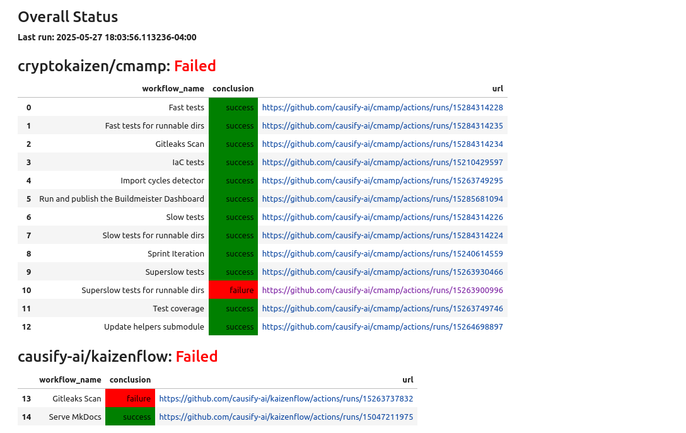
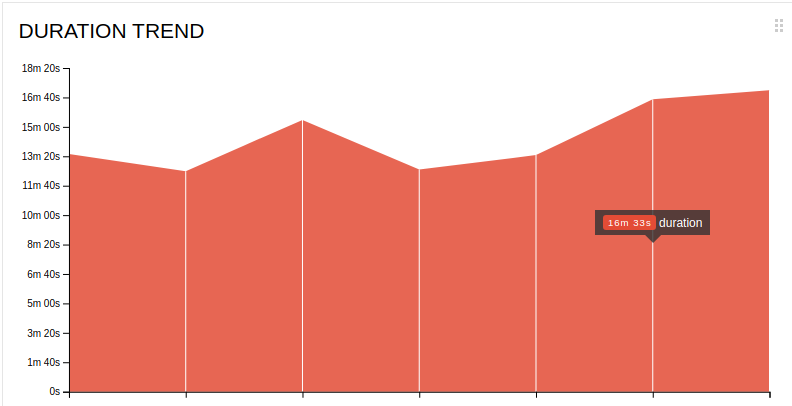
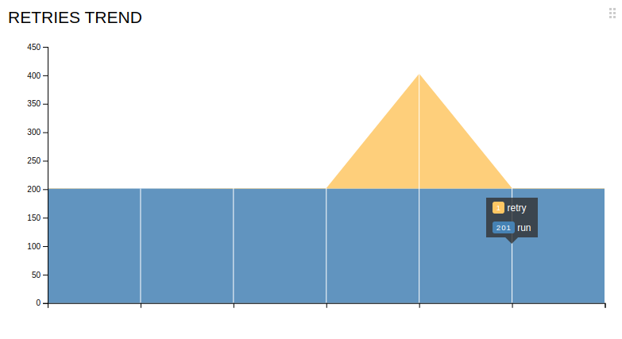

All.buildmeister.how to guide
Buildmeister#
Buildmeister Process#
General#
- The Buildmeister rotates according to the schedule
- To see who is the Buildmeister now refer to Buildmeister gsheet
- Each rotation should be confirmed following the Handover Process which includes a status report from the outgoing Buildmeister and acknowledgment from the new one
- The Buildmeister is responsible for:
- Check build status using the buildmeister dashboard everyday
- Pushing team members to fix broken tests
- Conducting post-mortem analysis
- Why did the break happen?
- How can we avoid the problem next time, through process and automation?
- Refer to
.githubdir in the repo for update schedule of GH actions - Additional information about tests:
Notification System#
Kaizen GitHub actions appnotifies the team about breaks via Slack channel #build-notifications- A notification contains:
- Failing tests type: fast/slow/super-slow
- Repo
- Branch
- Event
- Link to a failing run
Example:

Buildmeister Instructions#
- You receive a break notification from
Kaizen GitHub actions app - Have a look at the message
- Do it right away, this is always your highest priority task
-
Notify the team
- If the break happened in
lemonaderepo, ping GP or Paul, since they are the only ones with write access
- If the break happened in
-
Post on the #build-notifications Slack channel what tests broke, e.g.,
FAILED knowledge_graph/vendors/test/test_utils.py::TestClean::test_clean- If unsure about the cause of failure (there is a chance that a failure is
temporary):
- Do a quick run locally for the failed test
- If the test is specific and can not be run locally, rerun the regressions
- Ask if somebody knows what is the problem
- If you know who is in charge of that test (you can use
git blame) ask directly
- If you know who is in charge of that test (you can use
- If the offender says that it's fixing the bug right away, let him/her do it
- Otherwise, file a bug to track the issue
- If unsure about the cause of failure (there is a chance that a failure is
temporary):
-
File an Issue on GH to report the failing tests and the errors
- Example: https://github.com/cryptokaizen/cmamp/issues/4386
- Issue title template
Build fail - {repo} {test type} ({run number})- Example:
Build fail - Cmamp fast_tests (1442077107)
- Example:
- Paste the URL of the failing run
- Provide as much information as possible to give an understanding of the problem
- List all the tests with FAILED status in a GitHub run, e.g.,
FAILED knowledge_graph/vendors/test/test_p1_utils.py::TestClean::test_clean FAILED knowledge_graph/vendors/nbsc/test/test_nbsc_utils.py::TestExposeNBSCMetadata::test_expose_nbsc_metadata - Stack trace or part of it (if it's too large)
Traceback (most recent call last): File "/.../automl/hypotheses/test/test*rh_generator.py", line 104, in test1 kg_metadata, * = p1ut.load_release(version="0.5.2") File "/.../knowledge_graph/vendors/utils.py", line 53, in load_release % version, File "/.../amp/helpers/dbg.py", line 335, in dassert_dir_exists \_dfatal(txt, msg, \*args) File "/.../amp/helpers/dbg.py", line 97, in \_dfatal dfatal(dfatal_txt) File "/.../amp/helpers/dbg.py", line 48, in dfatal raise assertion_type(ret) AssertionError: ############################################################################## Failed assertion \* dir='/fsx/research/data/kg/releases/timeseries_db/v0.5.2' doesn't exist or it's not a dir The requested version 0.5.2 has directory associated with it. - If the failures are not connected to each other, file separate issues for each of the potential root cause
- Keep issues grouped according to the codebase organization
-
Post the issue reference on Slack channel #build-notifications
- You can quickly discuss there who will take care of the broken tests, assign that person
- Otherwise, assign it to the person who can reroute
-
Our policy is "fix it or revert"
- The build needs to go back to green within 1 hr
- Either the person responsible for the break fixes the issue within 1 hour, or you need to push the responsible person to disable the test
- Do not make the decision about disabling the test yourself!
- First, check with the responsible person, and if he / she is ok with disabling, do it
- IMPORTANT: Disabling a test is not the first choice, it's a measure of last resort!
- The build needs to go back to green within 1 hr
-
Regularly check issues related to build breaks.
- You have to update the break issues if the problem was solved or partially solved.
- Pay special attention to the failures which resulted in disabling tests.
-
When your time of the Buildmeister duties is over, confirm the rotation with the next responsible person in the related Slack channel.
Update_Helpers_Submodule Fails#
-
When this happens, the first thing to do is attempt to update the
helperspointer manually -
Instructions:
> cd src/cmamp1 > git checkout master > git pull --recurse-submodules > cd helpers_root > git checkout master > git pull origin master > cd .. > git add helpers_root > git commit -m "Update helpers pointer"
Daily Reporting and Handover Process#
-
The current Buildmeister must send a daily status report to eng@ at the start of each workday with the TODO email
- The email subject should follow the format:
[BM Report] Build Status - YYYY-MM-DD - The email should include:
- Current status of all builds (green/red)
- For any red (failing) builds:
- Which tests are failing
- Why they are failing (if known)
- Who is responsible for fixing them
- Expected timeline for fixes
- Confirmation that all breaks are tracked with GitHub issues
- Include links to all open issues related to build breaks
- A screenshot of the current Buildmeister dashboard
- This provides a visual overview of the build status
- Any additional relevant information or concerns
- The email subject should follow the format:
-
The current Buildmeister must also save the status report in a Log file at Buildmesietr Log Doc
-
When a new Buildmeister takes over the role:
- The new Buildmeister must respond to the most recent status report email
- The response should:
- Acknowledge receipt of the handover
- Confirm understanding of current build status
- Include "Acknowledged" in the subject line
- CC the previous Buildmeister and eng@
-
Example email format:
Subject: BuildMeister Status Build Status Summary: - cmamp/master: RED (2 failing tests) - helpers/master: GREEN - lemonade/master: GREEN Point each break to a git Issue: - https://github.com/cryptokaizen/cmamp/issues/4386 Dashboard screenshot attached. Additional notes if needed: - The failing tests have been occurring since yesterday's deployment - We may need to update the data path configuration in our CI environment
Buildmeister Dashboard#
The Buildmeister dashboard is a tool that provides a quick overview of the current state of the results of all GitHub Actions workflows. See run and publish the buildmeister dashboard for detailed information.

Logic Used to Determine Workflow Status#
The dashboard uses the following logic to determine the latest and most relevant status of each GitHub Actions workflow:
-
Workflow Run Selection:
- For each workflow in each repo, the dashboard fetches the 10 most recent
workflow runs on the
masterbranch - For workflows such as
"Gitleaks Scan", the dashboard prioritizes the latest scheduled run (event == "schedule") as these are used for CI health checks - If no scheduled run is found (or the workflow does not have scheduled runs),
it falls back to the most recent completed run with a
conclusionof"success"or"failure"
- For each workflow in each repo, the dashboard fetches the 10 most recent
workflow runs on the
-
Overall Repository Status:
- A repository is marked as
Failedif any of its workflows have aconclusionoffailure - Otherwise, it is marked as
Success - In Jupyter notebooks, these statuses are color-coded:
Green:SuccessRed:Failure
- A repository is marked as
-
Workflow Data and Display:
- For each workflow, the dashboard shows:
repo_name: repository name (e.g.,cryptokaizen/cmamp)workflow_name: name of the workflow (e.g.,"Allure fast tests")conclusion: overall status ("success"or"failure")url: link to the specific workflow run
- All URLs in the dashboard are rendered as clickable links
- A timestamp indicating when the dashboard was last generated is included for reference
- For each workflow, the dashboard shows:
-
Handling Missing or Sparse Runs:
- If fewer than 10 runs are available for a workflow, the dashboard logs a warning and skips the workflow
- This ensures that workflows which haven't run recently do not affect the overall dashboard accuracy
Allure Reports Analysis#
-
For a background on Allure, refer to these docs
- Detailed info can be found in the official docs
- Allure Explanantion
- Allure How to Guide
-
For now, the Buildmeister can get the link to the Allure reports by navigating GitHub Actions page https://github.com/cryptokaizen/cmamp/actions
- Select a particular workflow (Allure fast tests, Allure slow tests, Allure superslow tests) based on the test types
- Click on the particular run for which to get the report. Latest is on the top
- Access the report URL by clicking
Report URLin the run link. For e.g.: https://github.com/cryptokaizen/cmamp/actions/runs/7210433549/job/19643566697 - The report URL looks like: http://172.30.2.44/allure_reports/cmamp/fast/report.20231212_013147
-
Once a week the Buildmeister manually inspects graph section of the report
- The overall goal is to:
-
Monitor the amount of skipped, failed, and broken tests using the
Trend Chart. It shows how a certain value changed over time. Each vertical line corresponds to a certain version of the test report, with the last line on the right corresponding to the current version - Monitor the
- Monitor the Duration Trendto check the time taken to the run all tests comparing to historical trends - Monitor the
Duration Distribution, where all the tests are divided into groups based on how long it took to complete them, and manually compare with the last week results - Monitor the
- Monitor the Retries Trendto check the number of retries occurred in a particular run - The idea is to make sure it doesn't have drastic change in the values
-
- The overall goal is to:
-
Steps to perform if a test fails, timeouts or breaks
- When a particular test fails, timeouts or breaks, Buildmeister should look
in report for
- How long it was the case, e.g., did it occur in the past? Include this info when filing an issue
- The very first run when it happened and add that info to the issue. This could be useful for debugging purposes
- These info can be extracted by navigating the
Packagessection of the report for that test. Any particular test hashistoryandretriessection which shows the history of success and number of retries occured for that test
- The goal here is to provide more context when filing an issue so that we can make better decisions
- When a particular test fails, timeouts or breaks, Buildmeister should look
in report for
Post-Mortem Analysis (TBD)#
-
We want to understand on why builds are broken so that we can improve the system to make it more robust
- In order to do that, we need to understand the failure modes of the system
- For this reason we keep a log of all the issues and what was the root cause
-
Datecolumn:- Enter the date when the break took place
- Keep the bug ordered in reverse chronological order (i.e., most recent dates first)
-
Repocolumn:- Specify the repo where break occurred
amp- ...
- Specify the repo where break occurred
-
Test typecolumn:- Specify the type of the failing tests
- Fast
- Slow
- Super-slow
- Specify the type of the failing tests
-
Linkcolumn:- Provide a link to a failing run
-
Reasoncolumn:- Specify the reason of the break
- Merged a branch with broken tests
- Master was not merged in a branch
- Merged broken slow tests without knowing that
- Underlying data changed
- Specify the reason of the break
-
Issuecolumn:- Provide the link to the GH issue with the break description
-
Solutioncolumn:- Provide the solution description of the problem
- Problem that led to the break was solved
- Failing tests were disabled, i.e. problem was not solved
- Provide the solution description of the problem